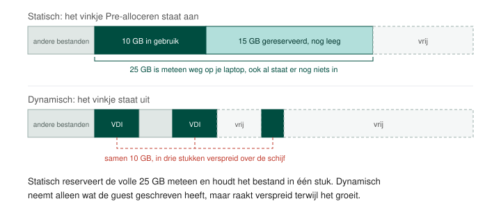

Schijf en geheugen
Twee instellingen uit de wizard bepalen hoe vlot je virtuele machine werkt en hoeveel plaats ze op je laptop inneemt: de manier waarop haar harde schijf plaats reserveert, en de hoeveelheid werkgeheugen die ze krijgt. De eerste ligt vast zodra de machine gemaakt is, de tweede pas je achteraf nog aan.
Statische en dynamische allocatie
De virtuele harde schijf is een bestand op de schijf van je laptop. Bij het aanmaken kies je met het vinkje Pre-alloceren volledige grootte hoe dat bestand groeit.

Statisch: het vinkje aan
Het bestand krijgt meteen zijn volledige grootte. Maak je een schijf van 25 GB, dan is er op je laptop vanaf dat moment 25 GB weg, ook al staat er nog niets in. De machine hoeft tijdens het werken nooit plaats bij te vragen, dus ze reageert sneller, en het bestand ligt in één stuk op de schijf in plaats van verspreid over vrije plekken.
Dynamisch: het vinkje uit
Het bestand begint klein en groeit mee met wat de guest erop schrijft. Een schijf van 25 GB waar 10 GB op staat, neemt op je laptop ongeveer 10 GB in. Je gebruikt dus alleen de plaats die je echt nodig hebt, wat past waar schijfruimte schaars is. De prijs is dat het bestand zichzelf moet uitbreiden terwijl de machine draait, en dat het daardoor verspreid over de schijf komt te liggen.

Ook een dynamische schijf kan nooit groter worden dan wat je bij het aanmaken opgegeven hebt. Kies je 25 GB, dan past er nooit meer dan 25 GB in, hoeveel plaats er op je laptop ook vrij is.
Werkgeheugen
Bij het aanmaken van de machine heb je het basisgeheugen ingesteld. Het absolute minimum voor Ubuntu is ongeveer 2 GB.
Wil je je virtuele machine sneller laten werken, dan levert meer werkgeheugen doorgaans meer op dan een extra processor. Het werkgeheugen bevat de gegevens en de instructies waar de processor op dat moment aan werkt. Is er te weinig van, dan schrijft het besturingssysteem een deel daarvan tijdelijk naar de harde schijf en haalt het terug zodra het weer nodig is. Elke keer dat dat gebeurt, wacht de processor op de schijf, en een schijf is een veelvoud trager dan geheugen.

Hoeveel je mag weggeven
Je host moet blijven draaien terwijl de guest werkt, dus je kan hem niet leegmaken. Geef hoogstens de helft tot drie kwart van je totale werkgeheugen weg, en kijk eerst hoeveel je host er zelf van gebruikt. Onder Windows lees je dat af in Taakbeheer, op het tabblad Prestaties. Een laptop met 32 GB waarvan de helft in gebruik is, geeft er vlot 8 GB aan een virtuele machine.
De schuifregelaar in VirtualBox toont die grens met een kleur: tot waar hij groen is, blijft er genoeg voor je host over.
Je past het aan in de instellingen van een machine die uitstaat. Hoe je haar stopt, staat op Virtuele hardware. Ook een installatie die al bezig is mag je hiervoor onderbreken: opnieuw beginnen met meer geheugen gaat vaak sneller dan wachten op een machine die te weinig heeft.
Het aantal processoren ligt om dezelfde reden vast tijdens het draaien. De grootte van de virtuele harde schijf is de enige van de drie die je achteraf niet meer verandert.